CODING AGENTS AS PIXEL WORLD MODELS
traex/GPT-6.1-Sol · 0126
点击播放 · 原生 RGB 像素
逐轮保存的候选
回放视频、检查图与代码变化。
每份候选均可单独播放。实际图片检查记录在下方工具轨迹中。
候选 01播放与检查图
点击播放 · 原生 RGB 像素
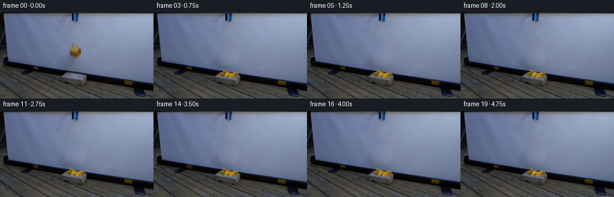
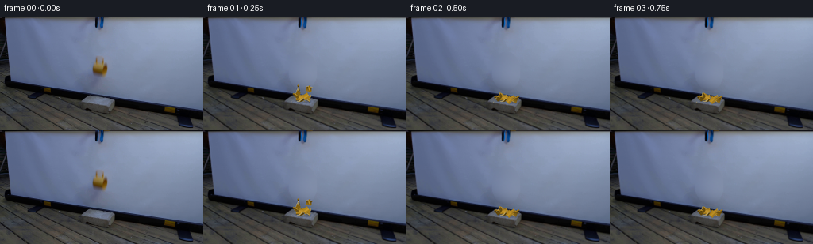
展开代码变化
--- 上一保存版本
+++ 本次保存版本
@@ -0,0 +1,218 @@
+from pathlib import Path
+import math
+import numpy as np
+from PIL import Image,ImageDraw,ImageFilter
+import cv2
+from scipy.ndimage import gaussian_filter
+import artifact_io
+
+ROOT=Path(__file__).resolve().parent
+W,H=256,144
+S=4
+rng=np.random.default_rng(16)
+original=np.array(Image.open(ROOT/'first_frame.png').convert('RGB'))
+
+# Reconstruct only the small screen region hidden by the falling cup and its shadow.
+yy,xx=np.mgrid[:H,:W]
+mask=(((xx-125)/18)**2+((yy-69)/25)**2<1)
+ring=(((xx-125)/27)**2+((yy-69)/34)**2<1)&~mask
+X=(xx-125)/25;Y=(yy-69)/30
+basis=np.stack([np.ones_like(X),X,Y,X*X,X*Y,Y*Y,X**3,Y**3,X*X*Y,X*Y*Y],-1)
+fit=np.linalg.lstsq(basis[ring],original[ring].astype(float),rcond=None)[0]
+pred=basis@fit
+noise=gaussian_filter(rng.normal(0,1,(H,W,3)),(.65,.65,0))*.85
+pred+=noise
+weight=cv2.GaussianBlur(mask.astype(np.float32),(0,0),1.3)
+# fully remove the blur of the moving mug within the ellipse
+weight[mask]=1
+background=np.clip(original*(1-weight[...,None])+pred*weight[...,None],0,255).astype(np.uint8)
+basebig=np.array(Image.fromarray(background).resize((W*S,H*S),Image.Resampling.BICUBIC)).astype(float)
+
+# Camera: fixed orthographic view, ground recedes up the frame.
+def project(p):
+ return np.stack([127+p[...,0],128-.36*p[...,1]-.94*p[...,2]],-1)*S
+
+light=np.array([-.5,-.65,1.2]);light/=np.linalg.norm(light)
+view=np.array([0.,-0.94,.36]);view/=np.linalg.norm(view)
+
+class Piece:
+ def __init__(self,verts,faces,mats):
+ self.verts=np.array(verts,float)
+ self.centre=self.verts.mean(0)
+ self.verts-=self.centre
+ self.faces=faces;self.mats=mats
+ self.radius=max(.6,-np.min(self.verts[:,2]))
+ self.axis=rng.normal(size=3);self.axis/=np.linalg.norm(self.axis)
+ self.omega=rng.uniform(-17,17)
+ self.angle=0.
+ self.p=self.centre+np.array([0,36,17])
+ self.v=np.array([self.centre[0]*3.6+rng.uniform(-25,25),rng.uniform(-68,34),rng.uniform(32,96)])
+ self.stop=False
+ self.spin=self.omega
+
+def shell(a,b,lo,hi,idx):
+ # Piece edges are irregular fracture lines; two glazed surfaces and pale exposed ceramic.
+ n=6;ts=np.linspace(a,b,n)
+ zigs=rng.uniform(-.7,.7,n);zigs[[0,-1]]=0
+ verts=[]
+ for rad in [6.45,5.65]:
+ for x in [lo,hi]:
+ for j,t in enumerate(ts):
+ xv=x+zigs[j]
+ verts.append([xv,rad*np.cos(t),rad*np.sin(t)])
+ faces=[];mats=[]
+ for j in range(n-1):
+ faces += [(j,j+1,n+j+1),(j,n+j+1,n+j)]
+ mats += [0,0]
+ faces += [(2*n+j,3*n+j+1,2*n+j+1),(2*n+j,3*n+j,3*n+j+1)]
+ mats += [1,1]
+ for offset in [0,n]:
+ faces += [(offset+j,2*n+offset+j,2*n+offset+j+1),(offset+j,2*n+offset+j+1,offset+j+1)]
+ mats += [2,2]
+ for j in [0,n-1]:
+ faces += [(j,n+j,3*n+j),(j,3*n+j,2*n+j)];mats += [2,2]
+ return Piece(verts,faces,mats)
+
+pieces=[]
+# Eight curved wall fragments, each retaining the cup's hollow curvature.
+angs=[-.28,1.1,2.9,4.35,2*np.pi-.28]
+for j in range(4):
+ for k in range(2):
+ pieces.append(shell(angs[j]+.012,angs[j+1]-.012,-6.6 if k==0 else -.65,-.65 if k==0 else 6.5,j*2+k))
+# Two broken pieces of the heavy circular cup bottom.
+for j in range(2):
+ ts=np.linspace(j*np.pi,(j+1)*np.pi,9)
+ vs=[]
+ for x in [-6.7,-5.7]:
+ vs.append([x,0,0])
+ vs.extend([[x,6.4*np.cos(t),6.4*np.sin(t)] for t in ts])
+ fs=[];ms=[]
+ for k in range(1,9):
+ fs.extend([(0,k+1,k),(10,10+k,11+k)]);ms.extend([0,1])
+ fs.extend([(k,k+1,11+k),(k,11+k,10+k)]);ms.extend([0,0])
+ fs.extend([(0,1,11),(0,11,10),(0,9,19),(0,19,10)]);ms.extend([2]*4)
+ pieces.append(Piece(vs,fs,ms))
+# Handle breaks into two curved ceramic arcs.
+for a,b in [(0.05,1.9),(1.93,3.1)]:
+ ts=np.linspace(a,b,9);vs=[]
+ for t in ts:
+ for phi in np.linspace(0,2*np.pi,6,endpoint=False):
+ rad=5.5+1.0*np.cos(phi)
+ vs.append([rad*np.cos(t),-.1+1.0*np.sin(phi),5.7+rad*np.sin(t)])
+ fs=[];ms=[]
+ for j in range(8):
+ for k in range(6):
+ p=j*6+k;q=j*6+(k+1)%6
+ fs.extend([(p,q,q+6),(p,q+6,p+6)]);ms.extend([0,0])
+ for start in [0,48]:
+ for k in range(1,5):fs.append((start,start+k,start+k+1));ms.append(2)
+ pieces.append(Piece(vs,fs,ms))
+# A few tiny ceramic chips, not a dust cloud.
+for j in range(4):
+ v=[[0,0,0],[rng.uniform(1,2),0,.2],[.5,1.1,.4],[.4,.2,1]]
+ p=Piece(v,[(0,1,2),(0,3,1),(1,3,2),(0,2,3)],[0,2,0,2])
+ p.p=np.array([rng.uniform(-4,4),36.,13.]);p.v=np.array([rng.uniform(-95,95),rng.uniform(-100,50),rng.uniform(40,95)])
+ pieces.append(p)
+
+def rot(axis,angle):
+ x,y,z=axis;c=np.cos(angle);s=np.sin(angle);d=1-c
+ return np.array([[c+x*x*d,x*y*d-z*s,x*z*d+y*s],[y*x*d+z*s,c+y*y*d,y*z*d-x*s],[z*x*d-y*s,z*y*d+x*s,c+z*z*d]])
+
+def worldverts(p):return p.verts@rot(p.axis,p.angle).T+p.p
+
+def step(dt):
+ for p in pieces:
+ if p.stop:continue
+ p.v[2]-=980*dt
+ p.p+=p.v*dt
+ p.angle+=p.spin*dt
+ verts=worldverts(p)
+ # Concrete brick occupies exactly its original photographed position.
+ onbrick=(-24<p.p[0]<16) and (18<p.p[1]<47)
+ height=10.5 if onbrick else 0.
+ mn=verts[:,2].min()
+ if mn<height and p.v[2]<0:
+ p.p[2]+=height-mn
+ speed=abs(p.v[2])
+ p.v[2]*=-.20 if onbrick else -.17
+ p.v[:2]*=.58
+ p.spin*=.44
+ if speed<20 and np.linalg.norm(p.v[:2])<9:
+ p.v[:]=0;p.spin=0;p.stop=True
+ p.v[:2]*=np.exp(-.45*dt)
+
+palette=np.array([[157,117,24],[170,128,32],[183,165,113]],float)
+
+def render():
+ image=basebig.copy()
+ shadows=Image.new('L',(W*S,H*S));d=ImageDraw.Draw(shadows)
+ for p in pieces:
+ v=worldverts(p)
+ onbrick=(-24<p.p[0]<16) and (18<p.p[1]<47)
+ ground=10.5 if onbrick else 0
+ floorv=v.copy();z=np.maximum(0,floorv[:,2]-ground)
+ floorv[:,0]+=.24*z;floorv[:,1]+=.13*z;floorv[:,2]=ground+.1
+ uv=project(floorv)
+ hull=cv2.convexHull(np.round(uv).astype(np.int32)).reshape(-1,2)
+ amount=int(70*np.exp(-max(0,p.p[2]-ground-2)/32))
+ d.polygon([tuple(x) for x in hull],fill=amount)
+ shade=np.array(shadows.filter(ImageFilter.GaussianBlur(1.8)))/255
+ image*=1-shade[...,None]*.58
+ depthbuffer=np.full((H*S,W*S),-1e9)
+ for p in pieces:
+ verts=worldverts(p);uv=project(verts)
+ for face,mat in zip(p.faces,p.mats):
+ pts=verts[list(face)];xy=uv[list(face)]
+ normal=np.cross(pts[1]-pts[0],pts[2]-pts[0]);length=np.linalg.norm(normal)
+ if length<1e-9:continue
+ normal/=length
+ # Faces are two-sided; orient the illumination toward the visible side.
+ if normal@view<0:normal=-normal
+ lam=max(0,float(normal@light))
+ halfway=(light+view);halfway/=np.linalg.norm(halfway)
+ spec=max(0,float(normal@halfway))**20
+ col=palette[mat]*(.56+.55*lam)+spec*np.array([27,24,15])
+ col=np.clip(col,0,255)
+ x0=max(0,int(np.floor(xy[:,0].min())));x1=min(W*S-1,int(np.ceil(xy[:,0].max())))
+ y0=max(0,int(np.floor(xy[:,1].min())));y1=min(H*S-1,int(np.ceil(xy[:,1].max())))
+ if x1<x0 or y1<y0:continue
+ y,x=np.mgrid[y0:y1+1,x0:x1+1];x=x+.5;y=y+.5
+ xa,ya=xy[0];xb,yb=xy[1];xc,yc=xy[2]
+ den=(yb-yc)*(xa-xc)+(xc-xb)*(ya-yc)
+ if abs(den)<1e-8:continue
+ a=((yb-yc)*(x-xc)+(xc-xb)*(y-yc))/den
+ b=((yc-ya)*(x-xc)+(xa-xc)*(y-yc))/den;c=1-a-b
+ inside=(a>=0)&(b>=0)&(c>=0)
+ deps=pts@view
+ dep=a*deps[0]+b*deps[1]+c*deps[2]
+ zb=depthbuffer[y0:y1+1,x0:x1+1]
+ take=inside&(dep>zb)
+ # Shards behind the brick cannot cover its front face.
+ pixY=y/S;pixX=x/S
+ behind=(p.p[1]>18) & (pts[:,2].max()<10.5)
+ if behind:
+ take &= ~((pixX>104)&(pixX<144)&(pixY>112)&(pixY<121))
+ texture=.9*np.sin(x*.17+y*.31)
+ dst=image[y0:y1+1,x0:x1+1]
+ dst[take]=col+texture[take,None]
+ zb[take]=dep[take]
+ # A slight optical softness keeps the reconstructed ceramic in the photographic scene.
+ im=Image.fromarray(np.clip(image,0,255).astype(np.uint8)).resize((W,H),Image.Resampling.LANCZOS)
+ return np.array(im)
+
+frames=[original.copy()]
+# First image already catches the released cup in free fall; contact follows within a tenth second.
+time=0.105
+dt=1/480
+for n in range(1,20):
+ target=n/4
+ while time<target-1e-7:
+ delta=min(dt,target-time);step(delta);time+=delta
+ # Integrate a short exposure during the fast fracture event.
+ frames.append(render())
+frames=np.stack(frames).astype(np.uint8)
+artifact_io.save(frames,ROOT)
+# useful larger preview of the first second and the resting ceramic fragments
+sheet=Image.new('RGB',(W*4,H*3))
+for j,k in enumerate([0,1,2,3,4,6,8,10,12,15,17,19]):sheet.paste(Image.fromarray(frames[k]),((j%4)*W,(j//4)*H))
+sheet.resize((W*8,H*6)).save(ROOT/'.tmp/candidate.png')
候选 02播放与检查图
点击播放 · 原生 RGB 像素
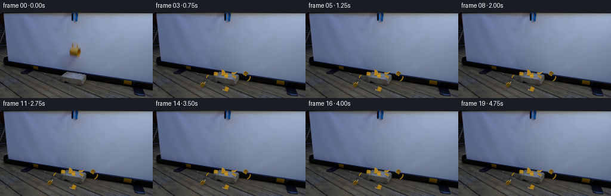
展开代码变化
--- 上一保存版本
+++ 本次保存版本
@@ -14,15 +14,15 @@
# Reconstruct only the small screen region hidden by the falling cup and its shadow.
yy,xx=np.mgrid[:H,:W]
-mask=(((xx-125)/18)**2+((yy-69)/25)**2<1)
-ring=(((xx-125)/27)**2+((yy-69)/34)**2<1)&~mask
+mask=(((xx-123)/27)**2+((yy-67)/28)**2<1)
+ring=(((xx-123)/40)**2+((yy-67)/39)**2<1)&~mask&(yy<95)
X=(xx-125)/25;Y=(yy-69)/30
-basis=np.stack([np.ones_like(X),X,Y,X*X,X*Y,Y*Y,X**3,Y**3,X*X*Y,X*Y*Y],-1)
+basis=np.stack([np.ones_like(X),X,Y,X*X,X*Y,Y*Y],-1)
fit=np.linalg.lstsq(basis[ring],original[ring].astype(float),rcond=None)[0]
pred=basis@fit
noise=gaussian_filter(rng.normal(0,1,(H,W,3)),(.65,.65,0))*.85
pred+=noise
-weight=cv2.GaussianBlur(mask.astype(np.float32),(0,0),1.3)
+weight=cv2.GaussianBlur(mask.astype(np.float32),(0,0),2.0)
# fully remove the blur of the moving mug within the ellipse
weight[mask]=1
background=np.clip(original*(1-weight[...,None])+pred*weight[...,None],0,255).astype(np.uint8)
@@ -46,7 +46,7 @@
self.omega=rng.uniform(-17,17)
self.angle=0.
self.p=self.centre+np.array([0,36,17])
- self.v=np.array([self.centre[0]*3.6+rng.uniform(-25,25),rng.uniform(-68,34),rng.uniform(32,96)])
+ self.v=np.array([self.centre[0]*12+rng.uniform(-85,85),rng.uniform(-190,55),rng.uniform(35,100)])
self.stop=False
self.spin=self.omega
@@ -134,9 +134,9 @@
if mn<height and p.v[2]<0:
p.p[2]+=height-mn
speed=abs(p.v[2])
- p.v[2]*=-.20 if onbrick else -.17
- p.v[:2]*=.58
- p.spin*=.44
+ p.v[2]*=-.26 if onbrick else -.19
+ p.v[:2]*=.77
+ p.spin*=.54
if speed<20 and np.linalg.norm(p.v[:2])<9:
p.v[:]=0;p.spin=0;p.stop=True
p.v[:2]*=np.exp(-.45*dt)
候选 03播放与检查图
点击播放 · 原生 RGB 像素
展开代码变化
--- 上一保存版本 +++ 本次保存版本 @@ -4,6 +4,8 @@ from PIL import Image,ImageDraw,ImageFilter import cv2 from scipy.ndimage import gaussian_filter +from scipy.sparse import diags +from scipy.sparse.linalg import spsolve import artifact_io ROOT=Path(__file__).resolve().parent @@ -15,17 +17,15 @@ # Reconstruct only the small screen region hidden by the falling cup and its shadow. yy,xx=np.mgrid[:H,:W] mask=(((xx-123)/27)**2+((yy-67)/28)**2<1) -ring=(((xx-123)/40)**2+((yy-67)/39)**2<1)&~mask&(yy<95) -X=(xx-125)/25;Y=(yy-69)/30 -basis=np.stack([np.ones_like(X),X,Y,X*X,X*Y,Y*Y],-1) -fit=np.linalg.lstsq(basis[ring],original[ring].astype(float),rcond=None)[0] -pred=basis@fit -noise=gaussian_filter(rng.normal(0,1,(H,W,3)),(.65,.65,0))*.85 -pred+=noise -weight=cv2.GaussianBlur(mask.astype(np.float32),(0,0),2.0) -# fully remove the blur of the moving mug within the ellipse -weight[mask]=1 -background=np.clip(original*(1-weight[...,None])+pred*weight[...,None],0,255).astype(np.uint8) +# Biharmonic interpolation is constrained by the surrounding photographed screen. +ids=np.arange(H*W).reshape(H,W) +L=diags([np.ones(H*W-W),np.ones(H*W-1),-4*np.ones(H*W),np.ones(H*W-1),np.ones(H*W-W)],[-W,-1,0,1,W],format='csr') +unknown=ids[mask] +known=original.astype(float).reshape(-1,3).copy();known[unknown]=0 +A=L[:,unknown] +solution=spsolve((A.T@A).tocsc(),-A.T@(L@known)) +background=original.copy() +background[mask]=np.clip(solution,0,255).astype(np.uint8) basebig=np.array(Image.fromarray(background).resize((W*S,H*S),Image.Resampling.BICUBIC)).astype(float) # Camera: fixed orthographic view, ground recedes up the frame.
候选 04播放与检查图
候选 05播放与检查图
点击播放 · 原生 RGB 像素
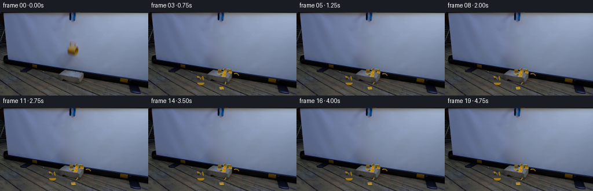
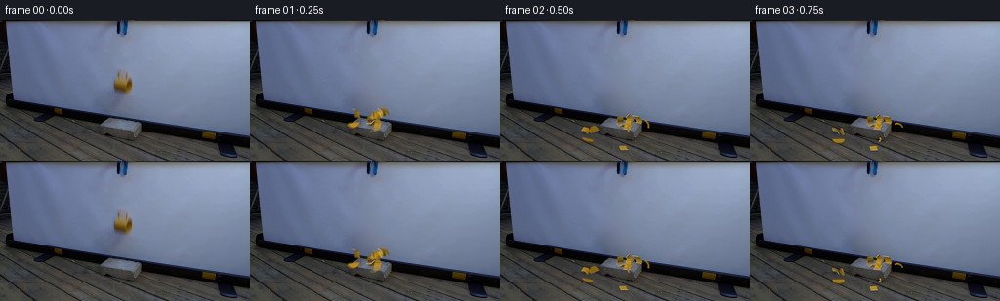
展开代码变化
--- 上一保存版本
+++ 本次保存版本
@@ -122,7 +122,11 @@
def step(dt):
for p in pieces:
- if p.stop:continue
+ if p.stop:
+ if hasattr(p,'restangle'):
+ p.angle+=(p.restangle-p.angle)*(1-np.exp(-12*dt))
+ p.p[2]=p.restheight-(p.verts@rot(p.axis,p.angle).T)[:,2].min()
+ continue
p.v[2]-=980*dt
p.p+=p.v*dt
p.angle+=p.spin*dt
@@ -139,6 +143,10 @@
p.spin*=.54
if speed<20 and np.linalg.norm(p.v[:2])<9:
p.v[:]=0;p.spin=0;p.stop=True
+ options=p.angle+np.linspace(-.8,.8,41)
+ altitudes=np.array([-(p.verts@rot(p.axis,a).T)[:,2].min() for a in options])
+ p.restangle=options[np.argmin(altitudes)]
+ p.restheight=height
p.v[:2]*=np.exp(-.45*dt)
palette=np.array([[157,117,24],[170,128,32],[183,165,113]],float)
@@ -198,7 +206,8 @@
zb[take]=dep[take]
# A slight optical softness keeps the reconstructed ceramic in the photographic scene.
im=Image.fromarray(np.clip(image,0,255).astype(np.uint8)).resize((W,H),Image.Resampling.LANCZOS)
- return np.array(im)
+ baseline=np.array(Image.fromarray(np.clip(basebig,0,255).astype(np.uint8)).resize((W,H),Image.Resampling.LANCZOS)).astype(float)
+ return np.clip(background.astype(float)+np.array(im).astype(float)-baseline,0,255).astype(np.uint8)
frames=[original.copy()]
# First image already catches the released cup in free fall; contact follows within a tenth second.
@@ -206,10 +215,13 @@
dt=1/480
for n in range(1,20):
target=n/4
- while time<target-1e-7:
- delta=min(dt,target-time);step(delta);time+=delta
- # Integrate a short exposure during the fast fracture event.
- frames.append(render())
+ samples=[]
+ shutters=[target-1/120,target,target+1/120] if n<4 else [target]
+ for moment in shutters:
+ while time<moment-1e-7:
+ delta=min(dt,moment-time);step(delta);time+=delta
+ samples.append(render())
+ frames.append(np.round(np.mean(samples,axis=0)).astype(np.uint8))
frames=np.stack(frames).astype(np.uint8)
artifact_io.save(frames,ROOT)
# useful larger preview of the first second and the resting ceramic fragments
可观测工具轨迹
实际执行的命令与返回图片。
命令 1exit 0
/bin/bash -lc "ls -la && cat prompt.txt && printf '\\n---RULES---\\n' && cat GENERATION_RULES.md"
命令 2exit 0
/bin/bash -lc "cat artifact_io.py && python - <<'PY'
from PIL import Image
im=Image.open('first_frame.png');print(im.size);im.resize((1024,576)).save('.tmp/first_large.png')
PY"命令 3exit 0
/bin/bash -lc "python - <<'PY'
from PIL import Image
im=Image.open('first_frame.png');im.crop((108,45,143,82)).resize((420,444)).save('.tmp/mug_crop.png')
PY"命令 4exit 0
/bin/bash -lc "python - <<'PY' import importlib.util for x in ['numpy','scipy','PIL','cv2']: print(x,bool(importlib.util.find_spec(x))) PY"
命令 5exit 0
/bin/bash -lc "cat > .tmp/bgtest.py <<'PY'
import cv2,numpy as np
from PIL import Image,ImageDraw
im=np.array(Image.open('first_frame.png'))
m=Image.new('L',(256,144));d=ImageDraw.Draw(m)
d.polygon([(118,47),(130,48),(132,54),(138,57),(139,76),(131,81),(114,78),(112,64),(116,56)],fill=255)
a=np.array(m)
bg=cv2.inpaint(im,a,5,cv2.INPAINT_TELEA)
Image.fromarray(bg).save('.tmp/bg.png');Image.fromarray(bg).resize((1024,576)).save('.tmp/bg_large.png')
PY
python .tmp/bgtest.py"命令 6exit 0
/bin/bash -lc "python - <<'PY'
import numpy as np
from PIL import Image
im=np.array(Image.open('first_frame.png'));print(im[45:83:3,112:140:3])
PY"命令 7exit 0
/bin/bash -lc "cat > generate.py <<'PY'
from pathlib import Path
import math
import numpy as np
from PIL import Image,ImageDraw,ImageFilter
import cv2
from scipy.ndimage import gaussian_filter
import artifact_io
ROOT=Path(__file__).resolve().parent
W,H=256,144
S=4
rng=np.random.default_rng(16)
original=np.array(Image.open(ROOT/'first_frame.png').convert('RGB'))
# Reconstruct only the small screen region hidden by the falling cup and its shadow.
yy,xx=np.mgrid[:H,:W]
mask=(((xx-125)/18)**2+((yy-69)/25)**2<1)
ring=(((xx-125)/27)**2+((yy-69)/34)**2<1)&~mask
X=(xx-125)/25;Y=(yy-69)/30
basis=np.stack([np.ones_like(X),X,Y,X*X,X*Y,Y*Y,X**3,Y**3,X*X*Y,X*Y*Y],-1)
fit=np.linalg.lstsq(basis[ring],original[ring].astype(float),rcond=None)[0]
pred=basis@fit
noise=gaussian_filter(rng.normal(0,1,(H,W,3)),(.65,.65,0))*.85
pred+=noise
weight=cv2.GaussianBlur(mask.astype(np.float32),(0,0),1.3)
# fully remove the blur of the moving mug within the ellipse
weight[mask]=1
background=np.clip(original*(1-weight[...,None])+pred*weight[...,None],0,255).astype(np.uint8)
basebig=np.array(Image.fromarray(background).resize((W*S,H*S),Image.Resampling.BICUBIC)).astype(float)
# Camera: fixed orthographic view, ground recedes up the frame.
def project(p):
return np.stack([127+p[...,0],128-.36*p[...,1]-.94*p[...,2]],-1)*S
light=np.array([-.5,-.65,1.2]);light/=np.linalg.norm(light)
view=np.array([0.,-0.94,.36]);view/=np.linalg.norm(view)
class Piece:
def __init__(self,verts,faces,mats):
self.verts=np.array(verts,float)
self.centre=self.verts.mean(0)
self.verts-=self.centre
self.faces=faces;self.mats=mats
self.radius=max(.6,-np.min(self.verts[:,2]))
self.axis=rng.normal(size=3);self.axis/=np.linalg.norm(self.axis)
self.omega=rng.uniform(-17,17)
self.angle=0.
self.p=self.centre+np.array([0,36,17])
self.v=np.array([self.centre[0]*3.6+rng.uniform(-25,25),rng.uniform(-68,34),rng.uniform(32,96)])
self.stop=False
self.spin=self.omega
def shell(a,b,lo,hi,idx):
# Piece edges are irregular fracture lines; two glazed surfaces and pale exposed ceramic.
n=6;ts=np.linspace(a,b,n)
zigs=rng.uniform(-.7,.7,n);zigs[[0,-1]]=0
verts=[]
for rad in [6.45,5.65]:
for x in [lo,hi]:
for j,t in enumerate(ts):
xv=x+zigs[j]
verts.append([xv,rad*np.cos(t),rad*np.sin(t)])
faces=[];mats=[]
for j in range(n-1):
faces += [(j,j+1,n+j+1),(j,n+j+1,n+j)]
mats += [0,0]
faces += [(2*n+j,3*n+j+1,2*n+j+1),(2*n+j,3*n+j,3*n+j+1)]
mats += [1,1]
for offset in [0,n]:
faces += [(offset+j,2*n+offset+j,2*n+offset+j+1),(offset+j,2*n+offset+j+1,offset+j+1)]
mats += [2,2]
for j in [0,n-1]:
faces += [(j,n+j,3*n+j),(j,3*n+j,2*n+j)];mats += [2,2]
return Piece(verts,faces,mats)
pieces=[]
# Eight curved wall fragments, each retaining the cup's hollow curvature.
angs=[-.28,1.1,2.9,4.35,2*np.pi-.28]
for j in range(4):
for k in range(2):
pieces.append(shell(angs[j]+.012,angs[j+1]-.012,-6.6 if k==0 else -.65,-.65 if k==0 else 6.5,j*2+k))
# Two broken pieces of the heavy circular cup bottom.
for j in range(2):
ts=np.linspace(j*np.pi,(j+1)*np.pi,9)
vs=[]
for x in [-6.7,-5.7]:
vs.append([x,0,0])
vs.extend([[x,6.4*np.cos(t),6.4*np.sin(t)] for t in ts])
fs=[];ms=[]
for k in range(1,9):
fs.extend([(0,k+1,k),(10,10+k,11+k)]);ms.extend([0,1])
fs.extend([(k,k+1,11+k),(k,11+k,10+k)]);ms.extend([0,0])
fs.extend([(0,1,11),(0,11,10),(0,9,19),(0,19,10)]);ms.extend([2]*4)
pieces.append(Piece(vs,fs,ms))
# Handle breaks into two curved ceramic arcs.
for a,b in [(0.05,1.9),(1.93,3.1)]:
ts=np.linspace(a,b,9);vs=[]
for t in ts:
for phi in np.linspace(0,2*np.pi,6,endpoint=False):
rad=5.5+1.0*np.cos(phi)
vs.append([rad*np.cos(t),-.1+1.0*np.sin(phi),5.7+rad*np.sin(t)])
fs=[];ms=[]
for j in range(8):
for k in range(6):
p=j*6+k;q=j*6+(k+1)%6
fs.extend([(p,q,q+6),(p,q+6,p+6)]);ms.extend([0,0])
for start in [0,48]:
for k in range(1,5):fs.append((start,start+k,start+k+1));ms.append(2)
pieces.append(Piece(vs,fs,ms))
# A few tiny ceramic chips, not a dust cloud.
for j in range(4):
v=[[0,0,0],[rng.uniform(1,2),0,.2],[.5,1.1,.4],[.4,.2,1]]
p=Piece(v,[(0,1,2),(0,3,1),(1,3,2),(0,2,3)],[0,2,0,2])
p.p=np.array([rng.uniform(-4,4),36.,13.]);p.v=np.array([rng.uniform(-95,95),rng.uniform(-100,50),rng.uniform(40,95)])
pieces.append(p)
def rot(axis,angle):
x,y,z=axis;c=np.cos(angle);s=np.sin(angle);d=1-c
return np.array([[c+x*x*d,x*y*d-z*s,x*z*d+y*s],[y*x*d+z*s,c+y*y*d,y*z*d-x*s],[z*x*d-y*s,z*y*d+x*s,c+z*z*d]])
def worldverts(p):return p.verts@rot(p.axis,p.angle).T+p.p
def step(dt):
for p in pieces:
if p.stop:continue
p.v[2]-=980*dt
p.p+=p.v*dt
p.angle+=p.spin*dt
verts=worldverts(p)
# Concrete brick occupies exactly its original photographed position.
onbrick=(-24<p.p[0]<16) and (18<p.p[1]<47)
height=10.5 if onbrick else 0.
mn=verts[:,2].min()
if mn<height and p.v[2]<0:
p.p[2]+=height-mn
speed=abs(p.v[2])
p.v[2]*=-.20 if onbrick else -.17
p.v[:2]*=.58
p.spin*=.44
if speed<20 and np.linalg.norm(p.v[:2])<9:
p.v[:]=0;p.spin=0;p.stop=True
p.v[:2]*=np.exp(-.45*dt)
palette=np.array([[157,117,24],[170,128,32],[183,165,113]],float)
def render():
image=basebig.copy()
shadows=Image.new('L',(W*S,H*S));d=ImageDraw.Draw(shadows)
for p in pieces:
v=worldverts(p)
onbrick=(-24<p.p[0]<16) and (18<p.p[1]<47)
ground=10.5 if onbrick else 0
floorv=v.copy();z=np.maximum(0,floorv[:,2]-ground)
floorv[:,0]+=.24*z;floorv[:,1]+=.13*z;floorv[:,2]=ground+.1
uv=project(floorv)
hull=cv2.convexHull(np.round(uv).astype(np.int32)).reshape(-1,2)
amount=int(70*np.exp(-max(0,p.p[2]-ground-2)/32))
d.polygon([tuple(x) for x in hull],fill=amount)
shade=np.array(shadows.filter(ImageFilter.GaussianBlur(1.8)))/255
image*=1-shade[...,None]*.58
depthbuffer=np.full((H*S,W*S),-1e9)
for p in pieces:
verts=worldverts(p);uv=project(verts)
for face,mat in zip(p.faces,p.mats):
pts=verts[list(face)];xy=uv[list(face)]
normal=np.cross(pts[1]-pts[0],pts[2]-pts[0]);length=np.linalg.norm(normal)
if length<1e-9:continue
normal/=length
# Faces are two-sided; orient the illumination toward the visible side.
if normal@view<0:normal=-normal
lam=max(0,float(normal@light))
halfway=(light+view);halfway/=np.linalg.norm(halfway)
spec=max(0,float(normal@halfway))**20
col=palette[mat]*(.56+.55*lam)+spec*np.array([27,24,15])
col=np.clip(col,0,255)
x0=max(0,int(np.floor(xy[:,0].min())));x1=min(W*S-1,int(np.ceil(xy[:,0].max())))
y0=max(0,int(np.floor(xy[:,1].min())));y1=min(H*S-1,int(np.ceil(xy[:,1].max())))
if x1<x0 or y1<y0:continue
y,x=np.mgrid[y0:y1+1,x0:x1+1];x=x+.5;y=y+.5
xa,ya=xy[0];xb,yb=xy[1];xc,yc=xy[2]
den=(yb-yc)*(xa-xc)+(xc-xb)*(ya-yc)
if abs(den)<1e-8:continue
a=((yb-yc)*(x-xc)+(xc-xb)*(y-yc))/den
b=((yc-ya)*(x-xc)+(xa-xc)*(y-yc))/den;c=1-a-b
inside=(a>=0)&(b>=0)&(c>=0)
deps=pts@view
dep=a*deps[0]+b*deps[1]+c*deps[2]
zb=depthbuffer[y0:y1+1,x0:x1+1]
take=inside&(dep>zb)
# Shards behind the brick cannot cover its front face.
pixY=y/S;pixX=x/S
behind=(p.p[1]>18) & (pts[:,2].max()<10.5)
if behind:
take &= ~((pixX>104)&(pixX<144)&(pixY>112)&(pixY<121))
texture=.9*np.sin(x*.17+y*.31)
dst=image[y0:y1+1,x0:x1+1]
dst[take]=col+texture[take,None]
zb[take]=dep[take]
# A slight optical softness keeps the reconstructed ceramic in the photographic scene.
im=Image.fromarray(np.clip(image,0,255).astype(np.uint8)).resize((W,H),Image.Resampling.LANCZOS)
return np.array(im)
frames=[original.copy()]
# First image already catches the released cup in free fall; contact follows within a tenth second.
time=0.105
dt=1/480
for n in range(1,20):
target=n/4
while time<target-1e-7:
delta=min(dt,target-time);step(delta);time+=delta
# Integrate a short exposure during the fast fracture event.
frames.append(render())
frames=np.stack(frames).astype(np.uint8)
artifact_io.save(frames,ROOT)
# useful larger preview of the first second and the resting ceramic fragments
sheet=Image.new('RGB',(W*4,H*3))
for j,k in enumerate([0,1,2,3,4,6,8,10,12,15,17,19]):sheet.paste(Image.fromarray(frames[k]),((j%4)*W,(j//4)*H))
sheet.resize((W*8,H*6)).save(ROOT/'.tmp/candidate.png')
PY
python generate.py"命令 8exit 0
/bin/bash -lc "python - <<'PY'
from PIL import Image
im=Image.open('frames/19.png');im.resize((1024,576)).save('.tmp/end.png')
PY"命令 9exit 0
/bin/bash -lc "cp generate.py .tmp/generate_v1.py
python - <<'PY'
p='generate.py'
s=open(p).read().replace(\"mask=(((xx-125)/18)**2+((yy-69)/25)**2<1)\",\"mask=(((xx-123)/27)**2+((yy-67)/28)**2<1)\")
s=s.replace(\"ring=(((xx-125)/27)**2+((yy-69)/34)**2<1)&~mask\",\"ring=(((xx-123)/40)**2+((yy-67)/39)**2<1)&~mask&(yy<95)\")
s=s.replace('basis=np.stack([np.ones_like(X),X,Y,X*X,X*Y,Y*Y,X**3,Y**3,X*X*Y,X*Y*Y],-1)','basis=np.stack([np.ones_like(X),X,Y,X*X,X*Y,Y*Y],-1)')
s=s.replace('(0,0),1.3','(0,0),2.0')
s=s.replace('self.centre[0]*3.6+rng.uniform(-25,25),rng.uniform(-68,34),rng.uniform(32,96)','self.centre[0]*12+rng.uniform(-85,85),rng.uniform(-190,55),rng.uniform(35,100)')
s=s.replace(\"p.v[2]*=-.20 if onbrick else -.17\",\"p.v[2]*=-.26 if onbrick else -.19\").replace('p.v[:2]*=.58','p.v[:2]*=.77').replace('p.spin*=.44','p.spin*=.54')
open(p,'w').write(s)
PY
python generate.py"命令 10exit 0
/bin/bash -lc "cp generate.py .tmp/generate_v2.py
python - <<'PY'
p='generate.py';s=open(p).read();s=s.replace('from scipy.ndimage import gaussian_filter','from scipy.ndimage import gaussian_filter\\nfrom scipy.sparse import diags\\nfrom scipy.sparse.linalg import spsolve')
a=s.index('ring=');b=s.index('basebig=',a)
s=s[:a]+'''# Biharmonic interpolation is constrained by the surrounding photographed screen.
ids=np.arange(H*W).reshape(H,W)
L=diags([np.ones(H*W-W),np.ones(H*W-1),-4*np.ones(H*W),np.ones(H*W-1),np.ones(H*W-W)],[-W,-1,0,1,W],format='csr')
unknown=ids[mask]
known=original.astype(float).reshape(-1,3).copy();known[unknown]=0
A=L[:,unknown]
solution=spsolve((A.T@A).tocsc(),-A.T@(L@known))
background=original.copy()
background[mask]=np.clip(solution,0,255).astype(np.uint8)
''' + s[b:]
open(p,'w').write(s)
PY
python generate.py"命令 11exit 0
/bin/bash -lc "python - <<'PY'
p='generate.py';s=open(p).read()
s=s.replace(\"rng=np.random.default_rng(16)\",\"rng=np.random.default_rng(16)\")
s=s.replace(' if p.stop:continue',''' if p.stop:
if hasattr(p,'restangle'):
p.angle+=(p.restangle-p.angle)*(1-np.exp(-12*dt))
p.p[2]=p.restheight-(p.verts@rot(p.axis,p.angle).T)[:,2].min()
continue''')
s=s.replace('p.v[:]=0;p.spin=0;p.stop=True','''p.v[:]=0;p.spin=0;p.stop=True
options=p.angle+np.linspace(-.8,.8,41)
altitudes=np.array([-(p.verts@rot(p.axis,a).T)[:,2].min() for a in options])
p.restangle=options[np.argmin(altitudes)]
p.restheight=height''')
s=s.replace(\" return np.array(im)\",\" baseline=np.array(Image.fromarray(np.clip(basebig,0,255).astype(np.uint8)).resize((W,H),Image.Resampling.LANCZOS)).astype(float)\\n return np.clip(background.astype(float)+np.array(im).astype(float)-baseline,0,255).astype(np.uint8)\")
a=s.index('for n in range(1,20):');b=s.index('frames=np.stack',a)
s=s[:a]+'''for n in range(1,20):
target=n/4
samples=[]
shutters=[target-1/120,target,target+1/120] if n<4 else [target]
for moment in shutters:
while time<moment-1e-7:
delta=min(dt,moment-time);step(delta);time+=delta
samples.append(render())
frames.append(np.round(np.mean(samples,axis=0)).astype(np.uint8))
''' +s[b:]
open(p,'w').write(s)
PY
python generate.py
python - <<'PY'
import numpy as np
from PIL import Image
f=np.load('pixels.npz')['pixels'];a=np.array(Image.open('first_frame.png')).astype(np.uint32);p=(a[:,:,0]<<16)|(a[:,:,1]<<8)|a[:,:,2]
assert np.array_equal(f[:,:,0],p)
assert f.shape==(144,256,20)
print('Validated: 20 RGB frames, 256x144; exact first frame.')
PY"视觉工具实际返回图片 1
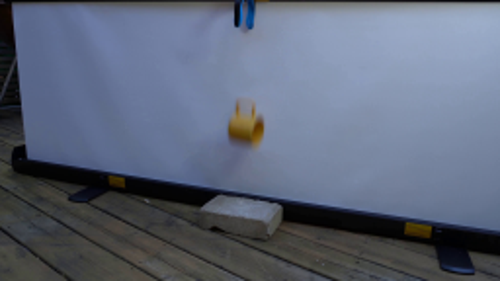
视觉工具实际返回图片 2
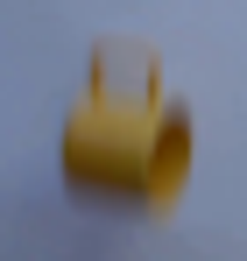
视觉工具实际返回图片 3
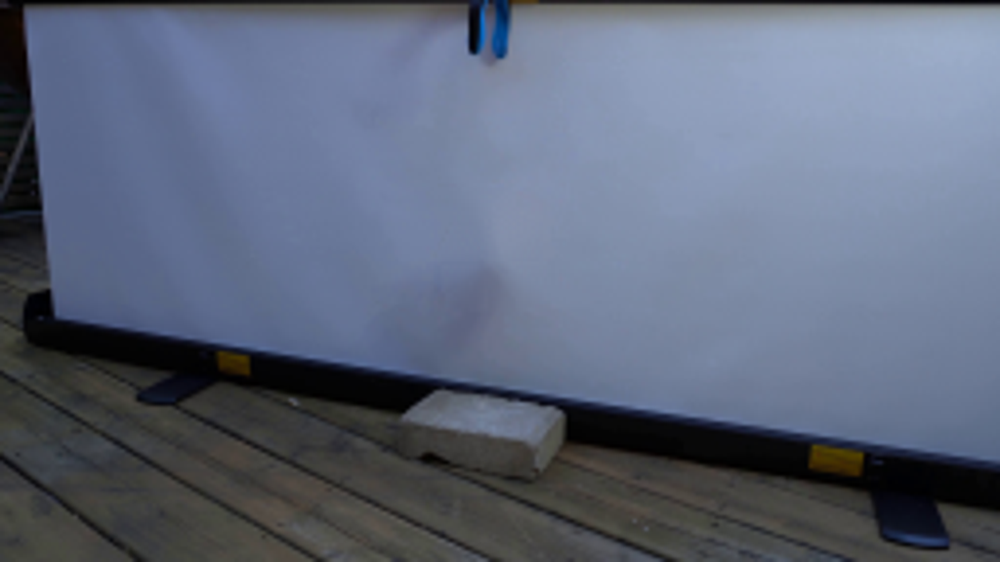
视觉工具实际返回图片 4
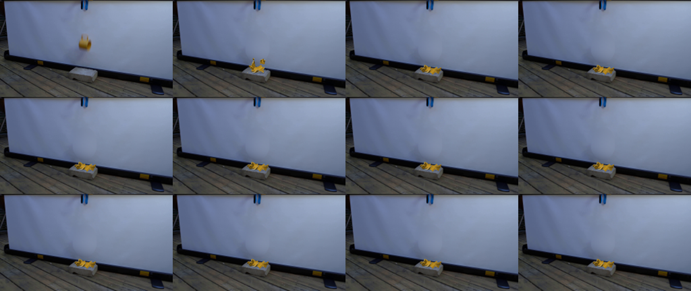
视觉工具实际返回图片 5
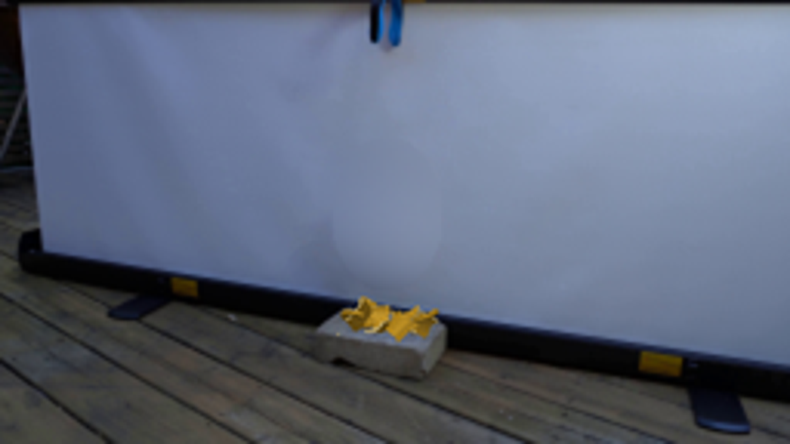
视觉工具实际返回图片 6
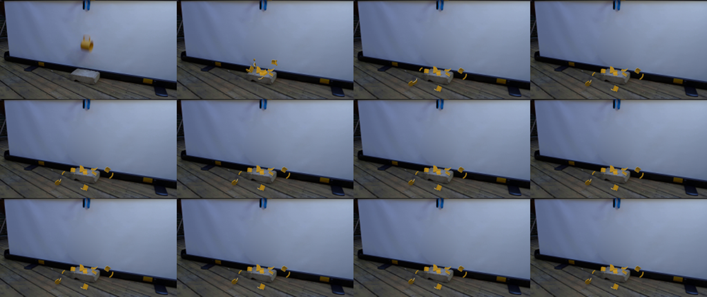
视觉工具实际返回图片 7
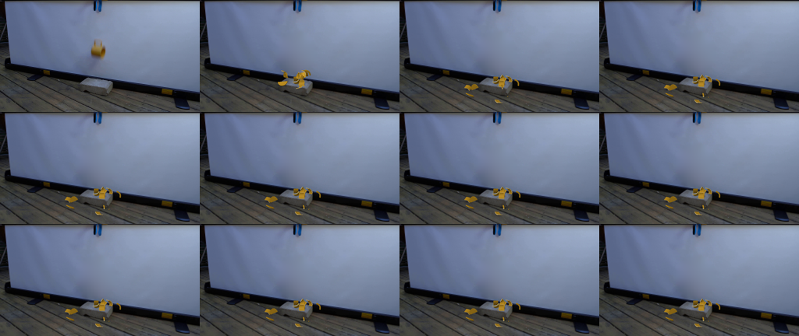
保存候选 5 份；完成命令 11 次；可验证图片返回 7 张。原始 API 响应与完整日志保留在本地。